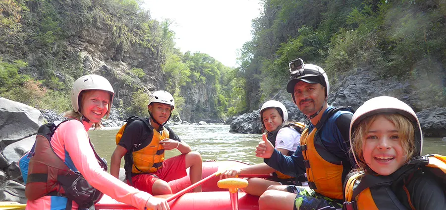

Descripción
Todo comienza en nuestro Punto de Encuentro, donde te recibimos con entusiasmo y te proporcionamos información detallada sobre el recorrido. Después de equiparnos con la indumentaria adecuada, nos dirigimos al río para una breve charla de seguridad, asegurándonos de que todos estén listos para disfrutar al máximo del Rafting Familiar en los siguientes 10 minutos.
La travesía comienza con una fase inicial en aguas tranquilas, brindándonos la oportunidad de practicar y refrescarnos en el río para prepararnos para el emocionante descenso.
El recorrido tiene una duración aproximada de una hora y media, durante la cual se presentan momentos ideales para nadar y lanzarse al agua.
A mitad del trayecto, hacemos una parada para disfrutar de un refrigerio y aprovechar al máximo la experiencia junto al río. Posteriormente, regresamos al Punto de Encuentro, donde compartimos otro refrigerio para cerrar con broche de oro esta emocionante aventura.
Recomendaciones
Incluye
El recorrido de Rafting Amacuzac te incluye el traslado del Punto de Encuentro al río y del río al Punto de Encuentro.
Así como el equipo necesario para la actividad como chaleco de flotación y casco.
Un refrigerio en el río y comida completa al final del recorrido.
Ríos Mexicanos te incluye en tu recorrido un seguro en caso de accidentes en el río.
Que traer
Ropa apta para nadar, traje de baño además de short ligeros y playera de manga larga como son las licras de tela sintéticas.
Calzado para mojar con agujetas y suela gruesa. Además de una muda de ropa y calzado para después del río.
Es importante que si estas bajo algún medicamente, no olvides traerlo y mantenernos informados, del mismo modo, te recomendamos traer barras energéticas y bebidas para hidratarte.
Datos
La misión de Rafting Familiar de Ríos Mexicanos es fomentar las actividades de aventura en la naturaleza, destacando la hermosura del río Amacuzac y subrayando la vital importancia de su conservación y protección. Este río no solo es hogar, sino también refugio de una diversidad extraordinaria de vida silvestre, que incluye especies endémicas y migratorias.
El recorrido es de 4 o 6 kilómetros de recorrido en el río dependiendo de la temporada.
La temporada de Rafting va de Julio a Marzo.
Dificultad baja, debido a los rápidos clase I y II, y el fácil acceso.
Observación de aves y fauna local.
De julio a octubre es temporada de agua alta, se recorren 6 kilómetros.
De octubre a marzo es temporada de agua baja. se recorren 4 kilómetros.